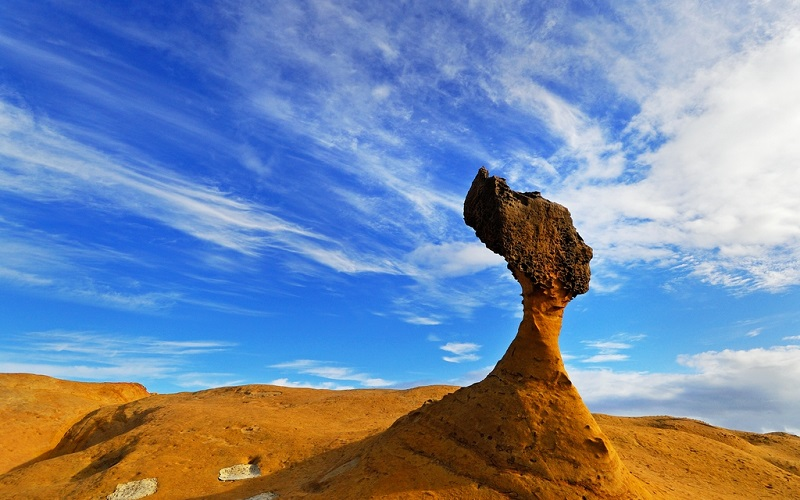
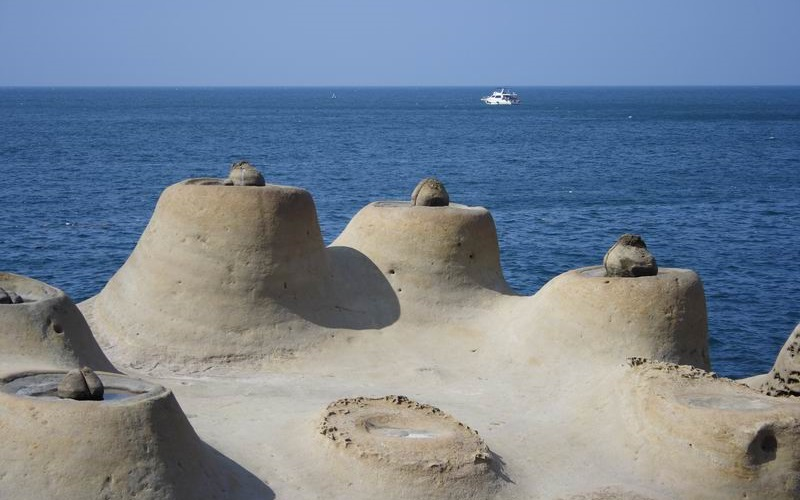
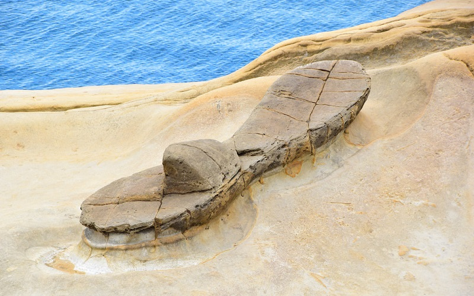

Yehliu Geopark
New Taipei City
Queen's head
 
Yehliu is a cape of about 1,700 meters long formed by Datun Mountain reaching into the sea. A distinctive feature of Yehliu
is the hoodoo stones that dot its surface. These shapes can be viewed at the Yehliu Geopark. A number of rock formations
have been given imaginative names based on their shapes. The best known is the "Queen's Head", an iconic image in Taiwan
and an unofficial emblem for the town of Wanli. Other formations include the "Fairy Shoe", and the "Sea Candles" are also
interesting geological landscape. There are also many wave-cut platforms due to the waves dashing against the sea cliffs.
- Official Website:http://www.ylgeopark.org.tw/ENG/info/YlIntroduction_en.aspx
- Best seasons: summer
- Transportation:
Take the express bus bounding to Jinshan at Tamshui station (near Tamshui MRT Station) and alight at Yehliu stop.